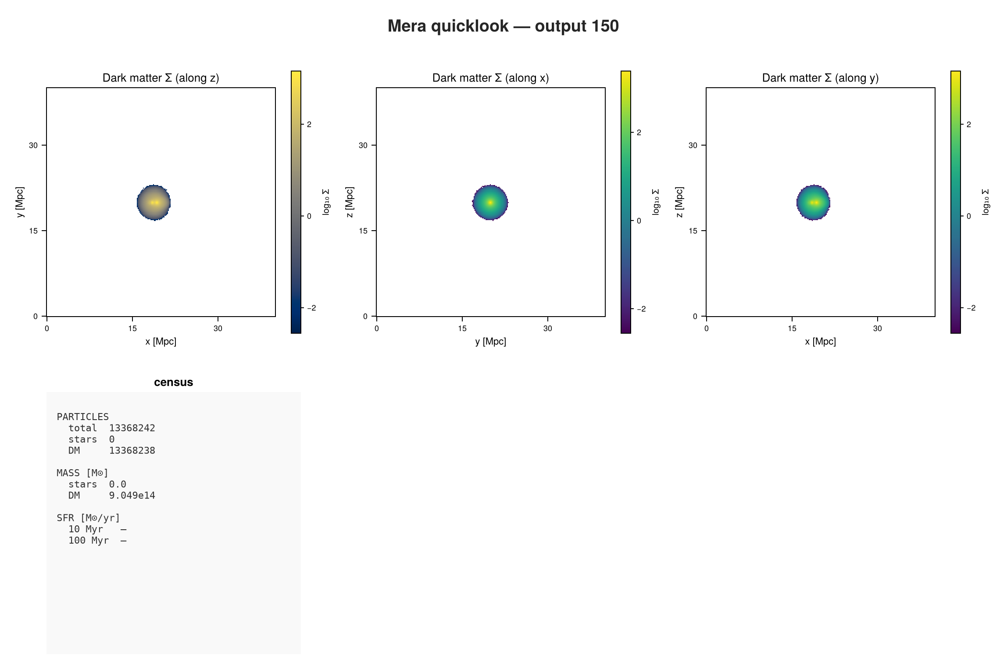
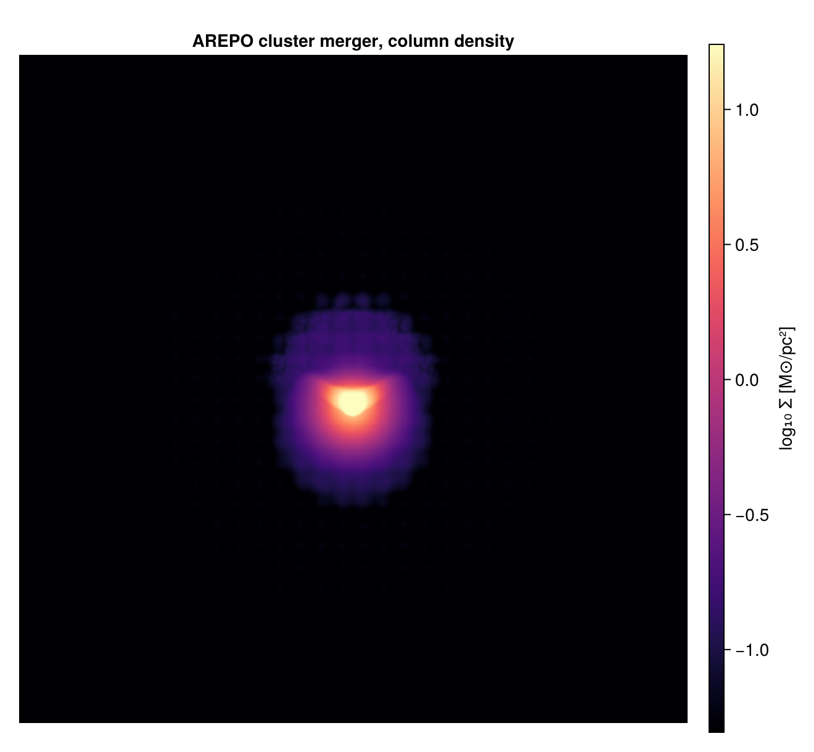

AREPO: First Inspection
This page is also an executable Jupyter notebook: open / download 45_arepo_First_Inspection.ipynb. The notebooks run end-to-end and double as part of Mera's test suite.
AREPO uses a moving mesh: the gas lives in Voronoi cells that move with the flow, so there is no fixed grid and no refinement level. Each cell is a point that knows how much space it occupies.
The run is a cluster merger, about 13 million gas cells in a 40 Mpc box.
It is the ArepoBullet sample from the yt project:
curl -O https://yt-project.org/data/ArepoBullet.tar.gz
tar xzf ArepoBullet.tar.gz1. What is in the file?
using Mera, CairoMakie
path = "/Volumes/FASTStorage/Simulations/Mera-Tests/AREPO/ArepoBullet/ArepoBullet"
info = getinfo(150, path);*__ __ _______ ______ _______
| |_| | | _ | | _ |
| | ___| | || | |_| |
| | |___| |_||_| |
| | ___| __ | |
| ||_|| | |___| | | | _ |
|_| |_|_______|___| |_|__| |__|
Mera v2.0.0-DEV | Julia 1.12.7 | 8 threads
[Mera]: 2026-09-15T22:03:06.416
Code: AREPO
output: 150 time: 1.5381 redshift: 0.0
boxlen = 40000.0
cells/particles: 12865831 gas cells (Voronoi), 13368238 halo/DM, 295531 stars (total 26529600)
gas is PartType0 → load with getparticles(info, families=[0]); there is no separate hydro block
group catalogue: none found (halo membership via halo= unavailable)
-------------------------------------------------------
[Mera]: composition not recorded by this format; using X = 0.76, mu = 1.32 (RAMSES convention) for :nH and :T. Change with setcomposition!(info; X_frac=…, mu=…).A census of the whole snapshot in one call, before loading anything yourself:
ql = quicklook(150; path=path);[Mera]: quicklook output 150, reading particles: 2026-09-15T22:03:21.999
┌─ Mera quicklook ── output 150 (AREPO) ───────────────
│ box : 40000.0 kpc levels 1–1 (finest 2.0e7 pc)
│ grid : ndim 3 · ncpu 1 · nvarh 0
│ time : 1504.0 Myr (non-cosmological)
│ particles : 13368242 total — stars 0 · DM 13368238 · sinks 4
│ star mass : 0.0 M⊙ DM mass : 9.049e14 M⊙
│ current SFR: — (10 Myr) · — (100 Myr) M⊙/yr
└─ 17.27 s ──────────────────────────────────
[Mera]: quicklook output 150 finished: 2026-09-15T22:03:39.267quicklookplot(ql)
The reader says it plainly: gas is PartType0, so it loads with getparticles, not gethydro. This snapshot does record its units, so no fallback is needed. It does not record a gas composition, so :nH uses the RAMSES convention, which the load message states.
capabilities(info)4-element Vector{Symbol}:
:info
:particles
:groups
:logsinfo.boxlen * info.scale.Mpc # box size39.998994304778042. Load the gas
gas = getparticles(info; families=[0]);[Mera]: AREPO gas cells = 12865831, families 0 (x,y,z,vx,vy,vz,mass,id,family,rho,u,gpot,volume)gas.dataTable with 12865831 rows, 13 columns:
Columns:
# colname type
────────────────────
1 x Float64
2 y Float64
3 z Float64
4 vx Float64
5 vy Float64
6 vz Float64
7 mass Float64
8 id Int64
9 family Int32
10 rho Float64
11 u Float64
12 gpot Float64
13 volume Float64Like GADGET, there is no level, cx, cy, cz: positions are ordinary numbers. Unlike GADGET, these are not particles in the usual sense. Each row is a cell, and :volume is the space it fills, derived as mass over density.
3. How much the cells vary
This is the thing to understand about a moving mesh. On an AMR grid, cell sizes change by factors of two between levels. Here they vary continuously, and by a lot:
vol = getvar(gas, :volume);
extrema(vol)(15.13118117840559, 1.097530975962345e9)(maximum(vol) / minimum(vol))^(1/3) # ratio of the largest to smallest cell, by length417.0434630953461A factor of several hundred in linear size, with no levels anywhere. That is why Mera stores these as points carrying a volume rather than trying to fit them onto a grid: there is no grid to fit them to.
4. Physical quantities
Everything downstream works as on any other code.
msum(gas, :Msol) # gas mass1.8997890230846906e14extrema(getvar(gas, :rho, :nH)) # cm^-3(1.3970482530155927e-8, 0.01813816514293843)Low densities across the board, which is right for the hot gas filling a cluster.
5. Temperature needs a composition
Temperature comes from the internal energy, and that needs the mean molecular weight. This snapshot records no electron abundance, so Mera falls back to the RAMSES convention. For hot cluster gas that is wrong by about a factor of two: the gas is fully ionised, so μ ≈ 0.6.
Say so, and it applies to the object you already loaded:
extrema(getvar(gas, :T, :K)) # default composition(10.708062581365388, 5.571910085560703e8)setcomposition!(gas; mu=0.6) # fully ionised
extrema(getvar(gas, :T, :K))(4.882876537102615, 2.5407909990156806e8)Around 2.5×10⁸ K at the peak, which is the shock-heated gas in a cluster merger.
When a snapshot does carry an electron abundance, as IllustrisTNG data does, Mera uses it per cell instead and there is nothing to set.
:nH is a separate question and needs no change here: it uses the hydrogen mass fraction, and 0.76 is the primordial value AREPO assumes.
5. Projection: why the weighting matters here
A grid code projects a cell over the area it covers. A moving-mesh cell has no fixed footprint, so Mera has to deposit it, and you choose how. The choice is visible, not cosmetic:
for w in (:mass, :sph, :voronoi)
pr = projection(gas, :sd, :Msol_pc2; direction=:z, res=192, weighting=w,
verbose=false, show_progress=false)
m = pr.maps[:sd]
println(rpad(string(w), 9), " filled pixels: ",
round(100*count(>(0), m)/length(m), digits=1), "%")
endmass filled pixels: 32.2%
sph filled pixels: 100.0%
voronoi filled pixels: 100.0%:massdrops each cell on one pixel. Fast and mass-conserving, but it leaves two thirds of the frame empty, because there are fewer cells than pixels in the sparse outskirts.:sphsmears each cell over a kernel sized from its own volume. Smooth, mass-conserving, and the usual way moving-mesh data is rendered.:voronoisamples each line of sight through the nearest cell. Sharp and genuinely cell-respecting, and the slowest. Intensive maps such as temperature are exact this way, but surface density is approximate, so use:sphwhen column mass has to be conserved.
This is the one place where a grid code and a moving-mesh code genuinely differ, rather than differing only in how the data is stored.
The map below uses :sph. Surface density has to conserve mass, and that is what :sph is for. :voronoi is the sharper option, but its own documentation says surface density is only approximate with it, so it belongs on intensive quantities such as temperature instead.
using Statistics
proj = projection(gas, :sd, :Msol_pc2; direction=:z, res=512, weighting=:sph);
L = log10.(proj.maps[:sd]);
lo, hi = quantile(vec(L), 0.90), quantile(vec(L), 0.999)
fig = Figure(size=(660, 610))
ax = Axis(fig[1,1]; title="AREPO cluster merger, column density", aspect=DataAspect())
hidedecorations!(ax)
hm = heatmap!(ax, L'; colormap=:magma, colorrange=(lo, hi))
Colorbar(fig[1,2], hm, label="log₁₀ Σ [M⊙/pc²]")
fig[Mera]: 2026-09-15T22:04:16.018
domain:
xmin::xmax: 0.0 :: 1.0 ==> 0.0 [Mpc] :: 39.999 [Mpc]
ymin::ymax: 0.0 :: 1.0 ==> 0.0 [Mpc] :: 39.999 [Mpc]
zmin::zmax: 0.0 :: 1.0 ==> 0.0 [Mpc] :: 39.999 [Mpc]
Effective resolution: 512^2
Pixel size: 78.123 [kpc]
Simulation min.: 19.999 [Mpc]
Where to go next
A moving mesh reaches Mera as positions plus a volume, and from there the analysis is the same as everywhere else. The one decision that is genuinely yours is the deposition when projecting.
The AREPO reader page covers the rest: SUBFIND catalogues, cosmological runs, IllustrisTNG data, and covering_grid for resampling moving-mesh gas onto a regular grid.